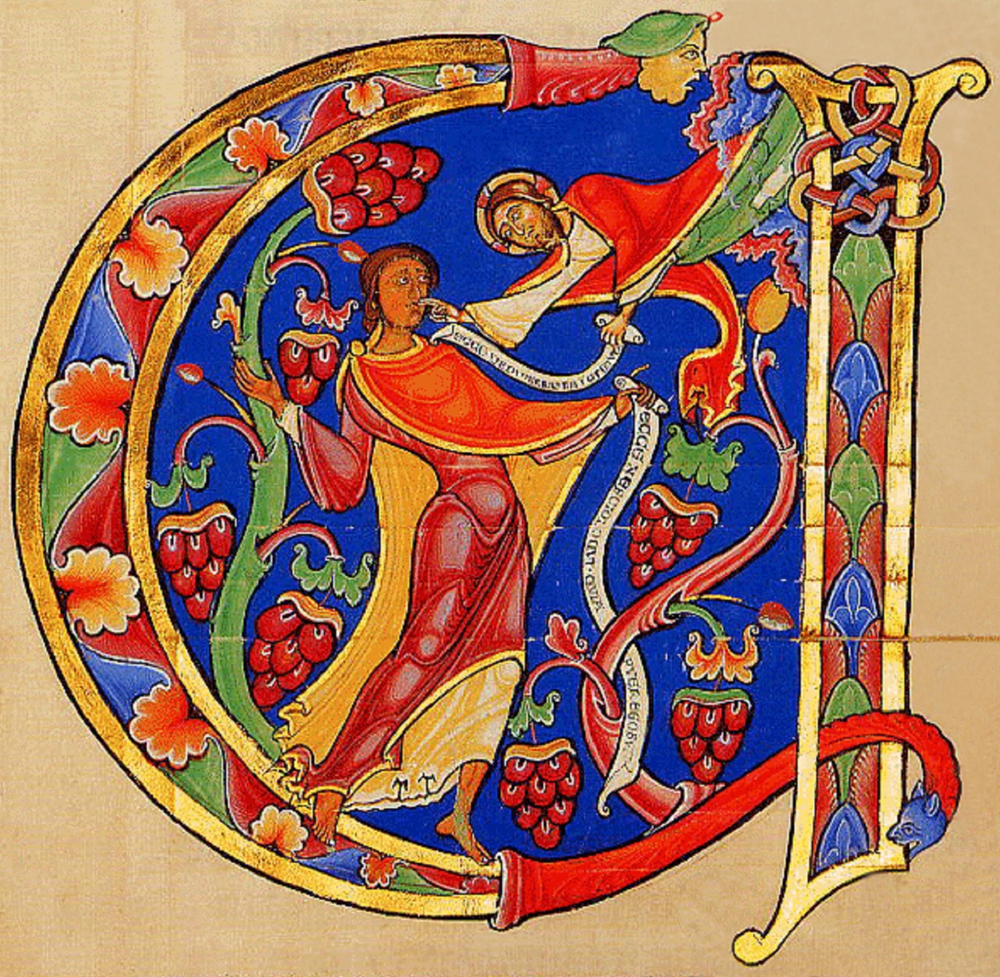
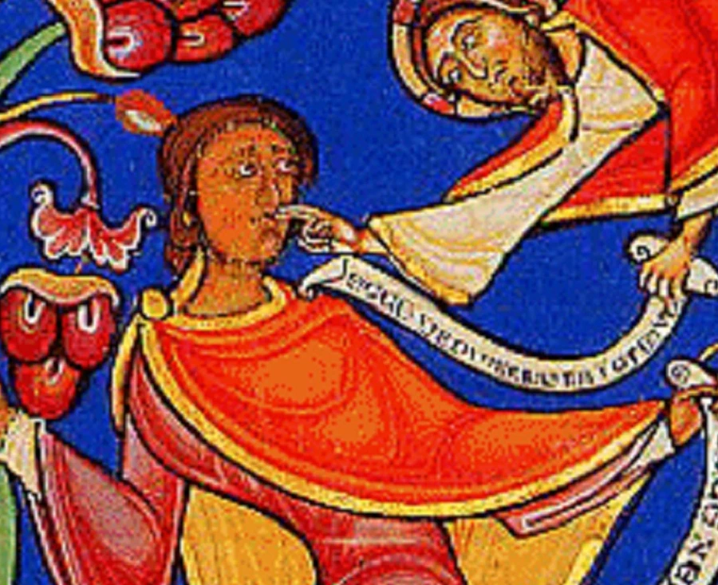
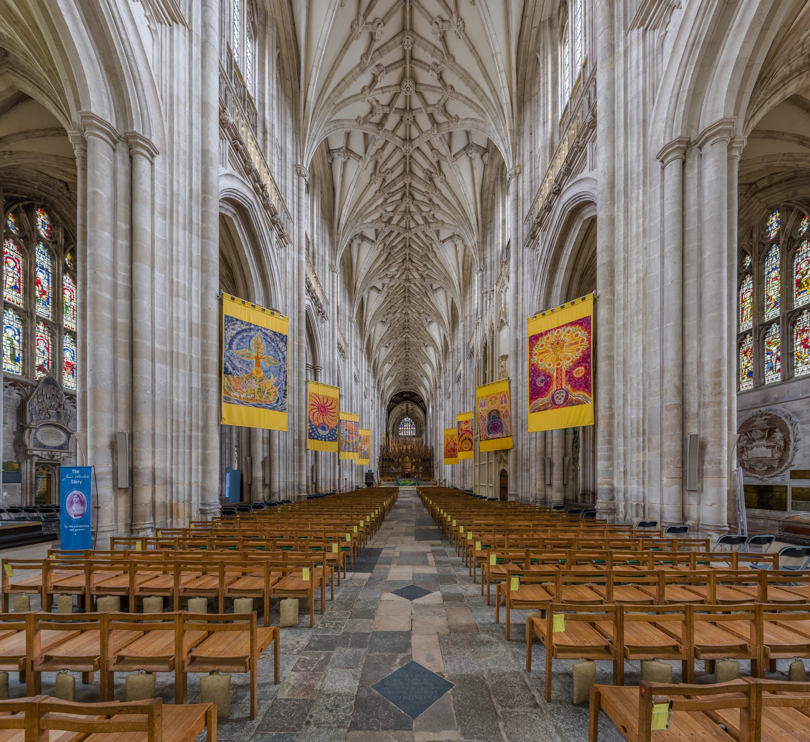

아직 펼치지 않은 카드손으로 그린 말씀 · 2윈체스터 성경한 장이 58cm가 넘는 거대한 성경이 25년 가까이 작업하고도 끝내 완성되지 못했어요. 그 ‘미완성’이 오히려 무엇을 알려 줄까요?엄청 큰 그림 글자 안에 사람이 들어 있어!
1150 ~ 1175년 무렵잉글랜드 윈체스터 · 성 스위던 수도원
윈체스터 성경
12세기 잉글랜드 윈체스터 대성당에 딸린 수도원에서 필경사(책을 베껴 쓰는 사람) 한 사람이 거대한 성경을 다 썼고, 화가들이 머리글자(장을 여는 첫 글자)를 하나씩 그려 나갔어요. 그런데 그림은 끝내 다 끝나지 않았고, 칠하다 멈춘 쪽들이 그대로 남았어요. 그 쪽들이 알려 주는 차례대로, 머리글자 하나를 한 겹씩 만들어 보세요.
아주 큰 성경의 그림 글자를 다 못 그렸대. 덕분에 어떤 차례로 그렸는지 알 수 있대. 우리도 차례대로 만들어 볼까?
검수 전 시안이에요(기준서 1판). 만드는 차례 그림은 이 안내서가 메트로폴리탄 미술관의 설명을 바탕으로 그린 것으로, 윈체스터 성경의 어느 한 쪽을 옮긴 그림이 아니에요. 장면에는 기록에 있는 것만 옮겼고, 상상은 ‘눈 감고 상상해 보기’에만 썼어요.
시안 확인용카드 단계 미리 보기
1
한 쪽이 생기는 차례
이 성경의 한 쪽은 세로가 58센티미터쯤이에요. 가로 80센티미터쯤 되는 양피지(가죽으로 만든 종이)를 반으로 접어 두 쪽을 만들었어요. 성경 전체의 양피지를 마련하는 데 송아지 가죽이 250장 넘게 들었어요. 가죽을 잿물(재를 우린 물)에 담갔다가 털과 살을 긁어내고, 틀에 당겨 말렸어요.
그다음 차례는 칠하다 멈춘 쪽들이 알려 줘요. 전도서(구약의 한 책) 첫 쪽(268째 장)에는 필경사가 비워 둔 머리글자 V 자리(라틴어 첫 낱말 Verba의 V)와 그릴 내용을 적어 둔 메모가 있고, 화가의 밑그림과 붙이다 만 금도 그대로 남아 있어요(메트로폴리탄 미술관).
아래 단추를 눌러 머리글자 하나가 생기는 차례를 따라가 보세요. 그림은 이 안내서가 그 차례를 바탕으로 그렸어요.
단추를 누를 때마다 쪽 위에 한 겹씩 더해져요. 아래 색 칩은 지금까지 쌓인 겹이에요.
이 안내서가 그린 머리글자 쪽 · 차례는 메트로폴리탄 미술관의 「윈체스터 성경 만들기」(C. T. 리틀, 2015)를 바탕으로, 글자·사람·덩굴의 모양은 빗대어 그림
쪽 위에 쌓인 겹
- 줄
- 갈색 글
- 밑그림
- 금
- 점무늬
- 청금석 파랑
- 빨강·초록·흰색
일곱 겹이 다 쌓였어요. 윈체스터 성경에는 이 가운데 어느 한 겹에서 멈춘 쪽들이 남아 있어요. 그래서 이 차례를 알 수 있어요.
밑그림을 그린 사람과 색을 칠한 사람이 다른 때가 많았어요. 적어도 여섯 화가가 두 팀으로 나뉘어 차례로 일했고, 앞 팀이 남긴 밑그림을 뒤 팀이 이어 칠하기도 했어요(스마트히스토리 · 메트로폴리탄 미술관).
큰 그림 글자는 한 번에 그리지 않았대. 차례차례, 겹겹이 만들었대!
물어보기금을 먼저 붙일까, 색을 먼저 칠할까?
2
두 화가의 손
뉴욕 모건 도서관에는 이 성경에서 떨어져 나온 한 장, ‘모건 낱장’이 있어요. 앞뒤의 밑그림은 첫 팀의 ‘외경 그림의 대가’가 그렸고, 색은 둘째 팀의 ‘모건 낱장의 대가’가 칠했어요. 외경은 유딧기·마카베오기처럼, 교회에 따라 구약에 넣기도 하고 따로 두기도 하는 책이에요. 이 별명들은 1940년대에 학자가 그림 솜씨를 나누려고 붙였어요.
앞면(사무엘 이야기)에서는 밑그림을 꼼꼼히 따랐어요. 두 화가가 함께 칠했는데, 얼굴에는 특히 칠을 맡은 둘째 팀 화가의 솜씨가 보인대요. 뒷면(다윗 이야기)에서는 그림을 더 단순하게 바꿨어요. 말과 사람들의 발을 그린 개수를 줄였어요(모건 도서관).
같은 화가가 그린 쪽 전체 크기의 밑그림 네 쪽 가운데, 색을 입은 것은 모건 낱장의 앞뒤 두 쪽뿐이에요. 나머지 두 쪽은 지금도 밑그림인 채 이 성경에 남아 있어요.
사진은 앞면 카드의 예레미야서 머리글자예요. 이제는 겹이 보이나요? 금빛 테두리, 청금석 파랑 바탕, 그리고 겹겹이 칠해 주름을 살린 붉은 옷이에요.
1170년 무렵 윈체스터. 나는 둘째 팀의 화가예요. 앞 팀의 화가가 남기고 간 밑그림이 내 앞에 있어요. 어떻게 할까요?
한 사람은 밑그림을 그리고, 다른 사람은 색칠을 했대.
물어보기친구가 그린 밑그림에 색칠한다면, 그대로 칠할래, 바꿔 칠할래?
눈 감고 상상해 보기
1170년 무렵, 수도원의 밝은 방. 넓은 양피지 위에 바늘로 눌러 그은 흐린 선이 보여요. 앞 화가가 남기고 간 선이에요. 조개껍데기 그릇에 갠 파란 물감에 붓끝을 적셔요. 첫 붓질을 어디에 올릴지, 숨을 고르며 오래 들여다봐요.
눈을 감아 봐. 커다란 종이에 흐린 연필 선이 있어. 파란 물감을 붓에 콕 찍었어. 어디부터 칠해 볼까?
나의 자리
‘끝내 다 못 그린 성경’이라는 말이, 칠하다 멈춘 쪽들을 본 지금은 어떻게 들리나요?
다 못 그린 그림 덕분에 무엇을 알게 됐어?
마음에 닿는 한 줄을 고르거나 직접 써 보세요. 한 줄을 남기면 이 자리의 도장이 찍혀요. 이 기기에만 저장돼요.
더 깊이
이야기를 보다 궁금해질 만한 것들이에요. 답을 읽거나 짧은 영화로 보세요.

앞면 머리글자는 무슨 글자고, 입에 손을 대는 이는 누구예요?

칠을 마친 모건 낱장은 어쩌다 뉴욕까지 갔어요?
뒷이야기
아직 펼치지 않은 이야기예요. 누르면 이야기가 펼쳐지고 색이 돌아와요. 더 알고 싶으면 근거를 따라가 보세요.
다 펼치면, 다음에 오실 때 새 이야기가 찾아와요.
오늘의 뒷이야기는 여기까지예요. 다음에 오시면 새 이야기가 기다리고 있어요.
펼친 뒷이야기 · 누르면 다시 볼 수 있어요
더 찾아보기
기록마다 다른 점
언제 만들었을까 메트로폴리탄 미술관은 1150~1175년 무렵의 25년이라고 하고, 모건 도서관과 스마트히스토리는 1160년 무렵 시작했다고 해요.
모건 낱장은 성경에 끼워져 있었을까 예전 학자들은 이 낱장이 성경에 끼워진 적이 없다고 봤어요. 클레어 도너번(1993년)은 낱장 뒷면과 성경 88째 장 앞면에 짙게 남은 얼룩을 들어, 끼워진 채 몇백 년 동안 펼쳐져 있었다고 봐요(모건 도서관).
누가 맡겼을까 흔히 윈체스터의 주교 블루아의 헨리로 보지만, 확실한 증거는 없어요. 헨리 2세 왕이 만드는 일을 도왔다는 생각도 나왔어요(스마트히스토리).
언제 멈췄을까 블루아의 헨리가 세상을 떠난 1171년 무렵으로 보는 학자도 있고, 1180년대까지 이어졌다고 보는 학자도 있어요(스마트히스토리).
함께 읽는 말씀
말씀은 뜻만 옮기고, 본문은 대한성서공회 개역개정으로 이어 드려요.
전도서 1장 1절 칠하다 멈춘 268째 장의 비어 있는 V 자리가 여는 첫 구절이에요. 라틴어 성경은 ‘말씀’(Verba)이라는 낱말로 시작해요.
예레미야 1장 9절 하나님이 손을 내밀어 예레미야의 입에 대며 말씀을 넣어 주셨다는 구절이에요. 둘째 장면의 머리글자가 이 장면이에요.
직접 가 보기
확인한 날 · 2026년 11월 18일 · 바뀌기 쉬운 정보라 정기적으로 다시 확인해요
성경은 윈체스터 대성당 남쪽 날개(트랜셉트)의 ‘Kings & Scribes’ 전시 1층에 있어요. 중세 필사본을 어떻게 만들었는지도 함께 보여 줘요. 위층에서는 자원봉사 필경사들이 글을 쓰는 책상도 볼 수 있어요.
여는 때는 월~토요일 10:30~16:30(16:15까지 입장), 일요일 12:30~14:30이에요. 자원봉사자 사정에 따라 갑자기 닫을 수 있어요. 입장은 대성당 연간 패스로 해요.
일곱 겹의 머리글자 금박
머리글자 하나를 일곱 단계 끝까지 만들어 보면 카드에 금박이 입혀져요.
머리글자를 일곱 단계 끝까지 만들어 보기
밑그림을 받은 화가 채색
둘 가운데 하나만 해도 카드가 채색돼요.
앞 팀의 밑그림을 받은 화가가 되어 고르기
아이와 함께 ‘영화처럼 보기’를 끝까지 보기
근거 보기 (14)
- 브리태니커: Henry of Blois — 1099년 무렵~1171년 8월 8일, 정복왕 윌리엄의 딸 아델라의 넷째 아들, 1129년부터 윈체스터 주교(잉글랜드에서 가장 부유한 교구), 1135년 형 스티븐이 왕으로 인정받는 데 큰 몫, 1141년 사촌 마틸다 편으로 갔다가 돌아옴, 군인이자 예술 후원자
- 윈체스터 대성당: Famous people — 성 스위던(863년에 세상을 떠난 앵글로색슨 주교, 한 세기 뒤 수도원의 수호성인, 옛 대성당 큰 제단으로 옮기자 40일 비가 왔다는 전설, 7월 15일, 울프스탄의 시를 잘못 옮긴 데서 나왔을 수도) · 제인 오스틴(1817년 41세에 묻힘, 처음 기념 돌에 책 이야기가 없어 1872년 북쪽 곁 통로에 놋쇠 판)
- Bible Gateway: 불가타 예레미야 1장 — 1절 Verba Jeremiae, 6절 ecce nescio loqui quia puer ego sum, 9절 ecce dedi verba mea in ore tuo
- C. T. Little, The Making of the Winchester Bible(메트로폴리탄 미술관 전시 블로그, 2015년 1월 21일) — 1150~1175년 무렵 25년, 여섯 화가, 송아지 가죽 250장 넘게(쪽 23×31¼인치), 잿물·긁기·말리기, 구멍과 줄, 필경사 한 사람·936쪽·한 쪽에 하루쯤, 268쪽 전도서(비워 둔 V 자리·메모·밑그림·금), 젯소·금·광내기를 색보다 먼저, 44쪽 민수기 머리글자의 점무늬, 청금석(아프가니스탄에서만, 금보다 드묾)·주사·연단·녹청·산화철·연백, 겹쳐 칠하기 · 재벌에서 더 확인: 두 쪽 한 장 23 × 31¼인치, 필경사는 성 스위던 수도원 필사실의 고참이었을 것, 1940년대 월터 오크숏이 붙인 여섯 이름
- W. M. Voelkle, The Morgan Leaf and the Winchester Bible(메트로폴리탄 미술관 전시 블로그) — 쪽 전체 크기 그림 넷의 밑그림, 칠한 것은 모건 낱장의 둘, 88쪽 앞에 있었을 낱장, 머리글자도 외경 그림의 대가의 밑그림 위에 · 재벌에서 더 확인(W. M. Voelkle, 2015년 2월 10일): 1820년 세 권으로 다시 엮을 때 빠졌을 것(새 번호에 없음), 윌리엄 모리스는 살 형편이 못 됨, 1912년 3만 프랑에 모건에게, 1897년 베넷이 모리스 수집품을 · 1902년 모건이 베넷 수집품을 삼
- The Met: Opening for the Book of 1 Samuel, The Morgan Leaf — 앞뒤 밑그림은 외경 그림의 대가, 칠은 모건 낱장의 대가, 이쪽에서는 처음 구도를 더 충실히 따름
- The Morgan Library & Museum: MS M.619 — 580×390mm, 앞뒤 17장면(사무엘·사울·다윗), 화가 둘, 1912년 올슈키에게서 삼, 예전 학자들과 도너번(1993)의 생각 · 재벌에서 더 확인: 다시 엮을 때 빠졌을 것, 올슈키가 윌리엄 모리스에게 100파운드에 내놓음, 앞뒤 장면(골리앗 · 창 · 기름 부음 · 압살롬)
- The Morgan Library & Museum: MS M.619 recto — 밑그림을 꼼꼼히 따름, 둘째 화가의 솜씨가 특히 얼굴에
- The Morgan Library & Museum: MS M.619 verso — 말과 사람의 발 수를 줄여 단순하게, 외경 그림의 대가의 쪽 전체 밑그림 넷 가운데 둘이 성경에 남음, 칠한 낱장은 이 한 장
- Smarthistory: The Winchester Bible — 성 스위던 수도원의 수도사였을 필경사, 한 사람의 글씨, 적어도 여섯 화가와 두 팀, 반쯤 칠하거나 밑그림만 남은 그림, 밑그림은 외경 그림의 대가·칠은 모건 낱장의 대가 · 재벌에서 더 확인: 후원자는 흔히 블루아의 헨리(증거는 없음 · 헨리 2세라는 생각도), 1160년 무렵 시작 · 끝은 1171년 무렵 또는 1180년대, 화가 이름은 솜씨를 가르려고 지은 것, 모건 낱장의 대가의 손길이 시헤나 왕립 수녀원 벽화에도
- 윈체스터 대성당: Exhibitions — Kings & Scribes(남쪽 트랜셉트), 1층의 윈체스터 성경과 필사본 만들기, 필경사 책상, 여는 때, 연간 패스
- Wikipedia: Winchester Bible — 길잡이(마친 머리글자 48개, 1945년 오크숏이 화가 별명을 붙임)
- 대한성서공회 개역개정: 전도서 1장 · 예레미야 1장
- 대한성서공회 개역개정: 예레미야 1장 6절 · 9절
그림·사진·소리 출처
‘처음 만나는 기독교 문화’의 깊은 카드예요. 카드 단계와 남긴 글은 이 기기에만 저장돼요.